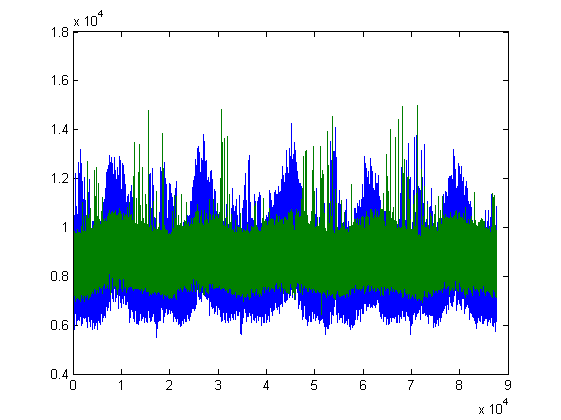
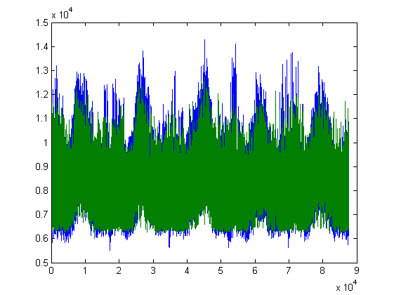

Load Forecasting
David Willingham
Contents
Importing Data
importdata('ausdata.xlsx'); % importing data
Regression Model
X = data(:,1:5); SYSLoad = data(:,7); DryBulb = data(:,2); scatter(DryBulb,SYSLoad,'DisplayName','SYSLoad vs DryBulb','XDataSource','DryBulb','YDataSource','SYSLoad');figure(gcf) w = X\SYSLoad; %regression SYSLoad2 = X*w; plot([SYSLoad,SYSLoad2])
Neural Networks
SYSLoad3 = sim(net,X')'; %neural networks
plot([SYSLoad,SYSLoad3])
